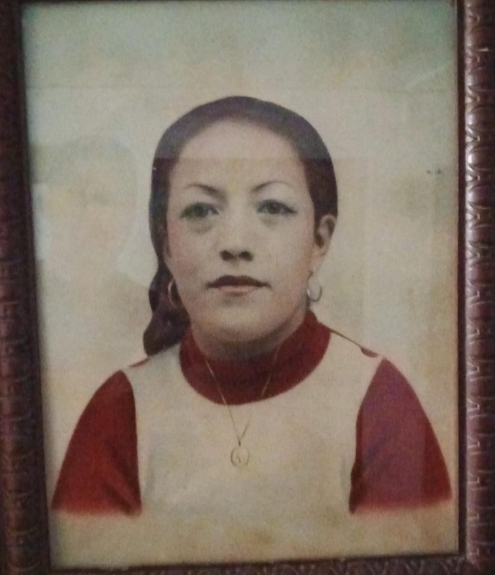

Origen de un Sueño
MauriNept Carpintería nace en el año 2026 bajo la visión emprendedora de Samuel Josué Velásquez Mejía. Lo que comenzó como un proyecto personal, rápidamente se transformó en una propuesta de vanguardia para el mercado merideño.
El nombre MauriNept no es casualidad; es un tributo viviente a la sabiduría y el legado de sus abuelos, Maura y Neptalí. Sus valores de honestidad, trabajo duro y atención al detalle son los pilares sobre los que construimos cada mueble que sale de nuestro taller.

Nuestra Misión
Transformar espacios a través de soluciones de carpintería personalizadas, utilizando materiales de primera calidad y técnicas de innovación para superar las expectativas de cada cliente en Mérida.
Nuestra Visión
Ser reconocidos en el 2030 como la carpintería líder en innovación y diseño de interiores en la región andina, destacando por nuestro compromiso familiar y excelencia artesanal.
¿Dónde encontrarnos?
📍 Ubicación: Urb. Valmar de Ejido, sector La "Don Luis", Mérida - Venezuela.
⏰ Horario de Atención:
Lunes a Viernes: 7:00 AM - 6:00 PM
¡Visítanos y diseñemos juntos el mueble de tus sueños!